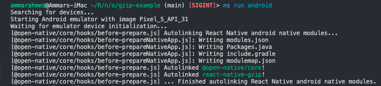

Open NativeDOCS
Installation
Before installing Open Native, make sure that you are on NativeScript 8.4.0 or newer. You can install Open Native in your NativeScript project via npm or yarn:
npm install @open-native/core
yarn add @open-native/core
Android Setup
Android requires two more steps before you start using installing native modules in your NativeScript app.
Installing open-native.gradle plugin
Create App_Resources/Android/before-plugins.gradle and install open-native.gradle plugin by pasting the following contents.
apply from: new File(text, "../scripts/open-native.gradle");
open-native.gradle plugin aliases react-native with open-native so any native modules will use open-native sources to compile & run.
Installing native_modules.gradle plugin
Create App_Resources/Android/settings.gradle and install native_modules.gradle plugin by pasting the following contents.
apply from: new File(text, "../scripts/native_modules.gradle");
native-modules.gradle plugin auto links open-native & local react-native module projects to your android at compile time.
Finally we will run our app to confirm everything is functional.
ns run android
ns run ios
As your app builds, you will see logs like below, congratulations!  Open Native is working.
Confirm that Open Native is functional at runtime
Once you have installed Open Native, you must want to know whether everything is setup correctly without installing any native modules. To do that, we are going to invoke a method from one of the core Linking module.
import { Linking } from 'react-native'; // react-native?? yes we alias react-native with open-native so don't worry, you have not installed react-native :P
// Invoke the method on Linking module to open a URL.
Linking.openURL('https://github.com/OpenNative/open-native');
This should open up Open Native github in your mobile/emulator browser.
I hope that was simple to do. Your project is now ready for installation of react-native modules.
What’s next
Now that you are all setup, Let’s install a native module in your NativeScript app.